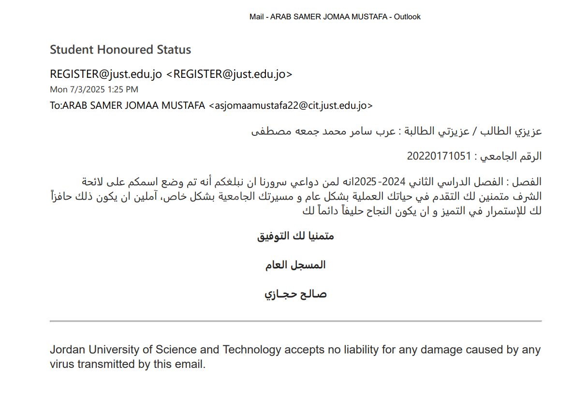

My Certificates
Networking Academy Learn-A-Thon 2025

This badge is awarded to students and instructors who participated in a Learn-A-Thon event organized by a local Networking Academy.
Recognition of his academic excellence.
An official letter from the Admissions and Registration Unit at the Jordan University of Science and Technology addressed to student Arab Samer Muhammad Juma Mustafa, informing him that his name has been included on the honor roll for the second semester of the 2024-2025 academic year, in recognition of his academic excellence. The letter expresses the university's pride in the student's achievement and encourages him to continue to excel and succeed in his academic and professional career.
Discovering Entrepreneurship
Cisco verifies the earner of this badge successfully completed the Discovering Entrepreneurship course and achieved the student level credential. Earners have knowledge of the key principles of entrepreneurship including the concepts, strategies, and tools needed to succeed as a small business owner, franchisee, founder, or other entrepreneurial professional.
Python Essentials
Cisco, in collaboration with OpenEDG Python Institute, verifies the earner of this badge successfully completed the Python Essentials 1 course and achieved the student level credentials. Earners have knowledge of the concepts of computer programming, the syntax and semantics of the Python language as well as demonstrate the ability to accomplish coding tasks related to the essentials of programming in the Python language and resolve implementation challenges using the Python Standard Library.
Introduction to IoT
Cisco verifies the earner of this badge successfully completed the Introduction to Internet of Things course. The holder of this student-level credential has introductory knowledge of IoT and has an understanding how it enables the Digital Transformation along with emerging technologies such as data analytics, AI/ML and the increased attention on cybersecurity. They understand the importance of Intent Based Networking to be able to connect and secure tens of billions of new devices with ease.